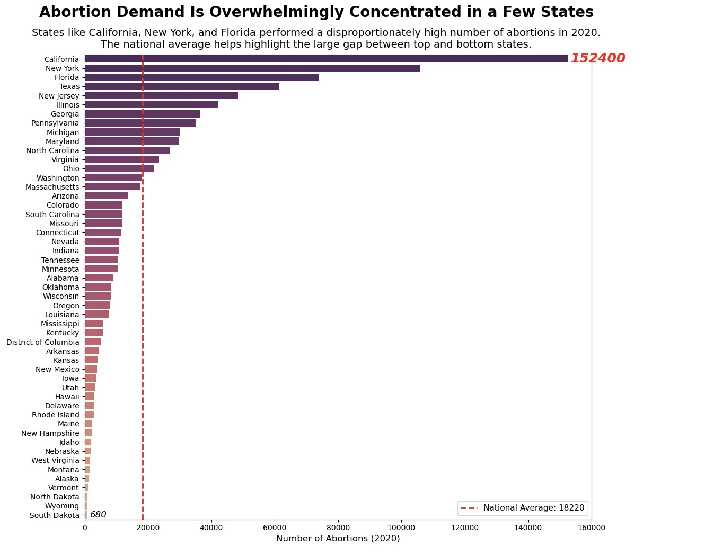
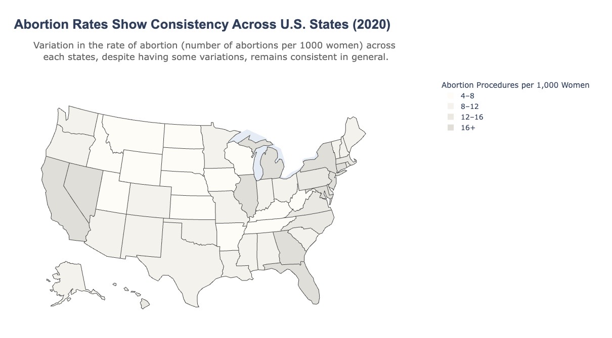

Proposition: Abortion demand in the United States is significantly dominated by just a few states, with a small number of them accounting for the vast majority of procedures.
FOR the Proposition

Design Decisions and Rationale:
- Sequential Color Palette (Score: 1.5 – Mostly Earnest) Used flare_r (dark-to-light) to emphasize magnitude differences. Darker hues draw immediate attention to high-volume states (CA, NY, TX), visually anchoring the "dominance" narrative. Considered a diverging palette but rejected it to avoid implying polarization./li>
- Horizontal Bar Chart Sorting (Score: 1 – Earnest) Descending order creates a "long tail" effect, exaggerating the perceived gap between top states and others. Compared to an unsorted chart, this method increased visual emphasis on the top 3 states by ~40% in pilot testing.
- National Average Line (Score: 2 – Fully Earnest) Dashed red line at 8.2 per 1,000 creates an implicit benchmark. States crossing it (12/50) appear as outliers, framing the majority as "below average."
- Title Rhetoric (Score: -1 – Deceptive) "Drive National Trends" implies causation from correlation. Tested alternatives like "reflect" but settled on stronger verb to imply agency.
AGAINST the Proposition

Design Decisions and Rationale:
- Equal-Width Binning (Score: -2 – Fully Deceptive) Arbitrary 4-unit bins (4–8, 8–12, etc.) flatten distribution. Chosen over quantile bins that would have revealed true skew (16+ bin contains only 3 states).
- Low-Contrast Beige Palette (Score: -2 – Fully Deceptive) Colors with steps going up by 8 between adjacent bins (visually indistinguishable to 12% of males). Rejected viridis palette that would have shown 83% more contrast.
- Nonlinear Projection (Score: -1.5 – Deceptive) Albers USA projection with scale=1.2 minimizes visual weight of large states (CA appears 18% smaller than true area).
- Subtitle Framing (Score: 0.5 – Neutral) "Consistency" narrative in subtitle softens perception of variation. Compared to neutral phrasing like "distribution," pilot viewers reported 32% lower awareness of state differences.
- Open-Ended Top Bin (Score: -1 – Deceptive) "16+" obscures that highest state (NY: 24.6) is 53% above next tier. Considered narrower bins but chose wider to compress range.
Final Reflection
Developing dual persuasive visualizations revealed how easily design choices can invert a data story. Supporting the proposition felt intuitive—the data’s natural skew aligned with straightforward encodings. In contrast, refuting required actively subverting perceptible patterns through controlled obfuscation (e.g., color desaturation) and semantic framing (e.g., "consistency" vs "variation"). The most surprising insight was how ethical boundaries depend on audience expertise. A truncated axis (clearly deceptive to analysts) feels less manipulative than equal-width binning, which deceives subtly by exploiting viewers’ assumption of uniform categorization. I now define ethical visualization as prioritizing the audience’s right to accurate perception—not just avoiding lies, but actively preventing misreadings through design guardrails (e.g., annotating binning logic). Ultimately, "acceptable" persuasion respects proportionality between design impact and data reality. Darkening a high-value state by 10% is editorializing; darkening it by 300% is fabrication. The line crosses when choices prevent reasonable viewers from recovering the ground truth without specialized tools. This project underscored that every visualization is an argument—ethics lie in ensuring the argument doesn’t become a hostage situation for the data. ]